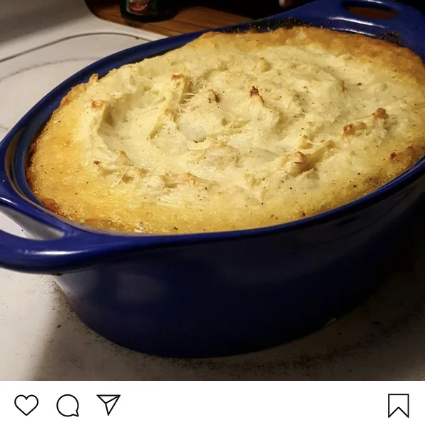

Cottage Pie

Description
The homemade cottage pie will in fact be the greatest pie you've ever tasted.
Note: no cottages were hurt during the making of this pie!
Ingredients
- Beef Mince (200g)
- Mr Mashy's Mashed Potato (1 packet)
- Grated Cheese
- Onion
- Condiments such as paprika, turmeric, black pepper/li>
Steps
- Turn on the oven to pre-heat at 160 degrees, then wash your hands you filthy animal
- Mix the mince and onion and add condiments.
- Spread evenly into the bottom of an oven dish
- Add boiling water to the Potato mix and stir until fluffy
- Spread potato across the top of the mince mix
- Sprinkle plenty of cheese and don't be shy!
- Add a sprinkle of black pepper and paprika
- Place in over and cook for 35 minutes
- Remove from oven and serve - enjoy (but don't burn ya mouth!)